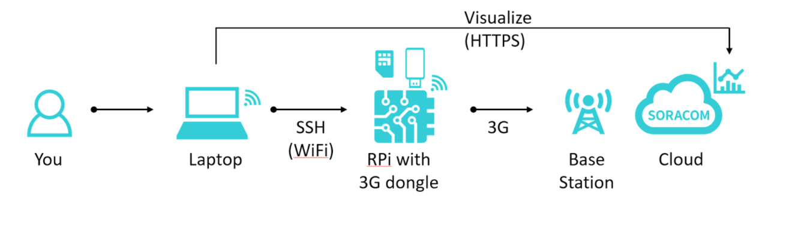

Last week, I went to a couple meet ups one of which being the
SF IoT Meetup. The Meetup was hosted at APROE,
a design and engineering firm. The venue
was filled with machines and had an interesting electronics lab, which proved
to be useful later when soldering was necessary for the Raspberry Pi kit.
The Meetup was a hands-on workshop hosted by Taku Tamagawa, the head of Operations at Soracom. As I got settled in, Taku explained the basic flow of the workshop: a Raspberry Pi connected with the Soracom SIM to communicate between the Pi and the Cloud.

After creating an account to manage my devices, we got to the fun part… connecting the devices! The Raspberry Pi was connected to the Wifi network at APROE, and since we already had the IP Address of the Pi, it was very simple to SSH into the device.
Next, we established 3G(cellular) connection via a USB Dongle and the Soracom SIM we registered. To do this, we first had to install a network manager on the Pi via this command:
sudo apt-get update && sudo apt-get install network-manager
We created the connection by using nmcli, a command line tool for
controlling NetworkManager. Our command specified that we want a gsm
(global system mobile communication) connection with apn (access point)
soracom.io. The full command is below:
sudo nmcli con add type gsm ifname "*" con-name soracom apn soracom.io user sora password sora
Next, we got to experience true IoT with the visualization of real-time data on
terminal. This was super exciting, and really attracts me to IoT. To connect the
sensor to the Pi, we connected the pins from the sensor to the Pi in a specific
order. The wiring looked like this:
To test if the sensor is working, we downloaded a Python script. The script
measured the distance from the sensor to the nearest object by sending a pulse
to the “Trig” pin. This pin then triggers the “Echo” pin to become high (which
starts the measuring). The measuring stops when “Echo” pin becomes low.
When we ran the script, you could test the sensor easily by putting an object,
(like a card) in front of it and seeing the distance shrink. Check it out!
Overall, the Meetup was really great because you could go at your own pace and ask for help if you were stuck. I think this is a much better way to learn than simply hearing someone speak for a couple of hours. If you get a chance to go to a hands-on workshop like this, I highly recommend it.